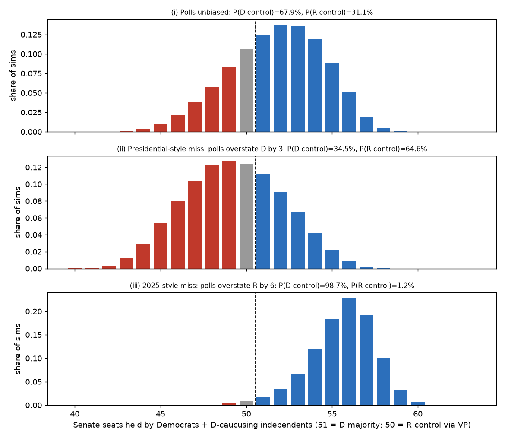
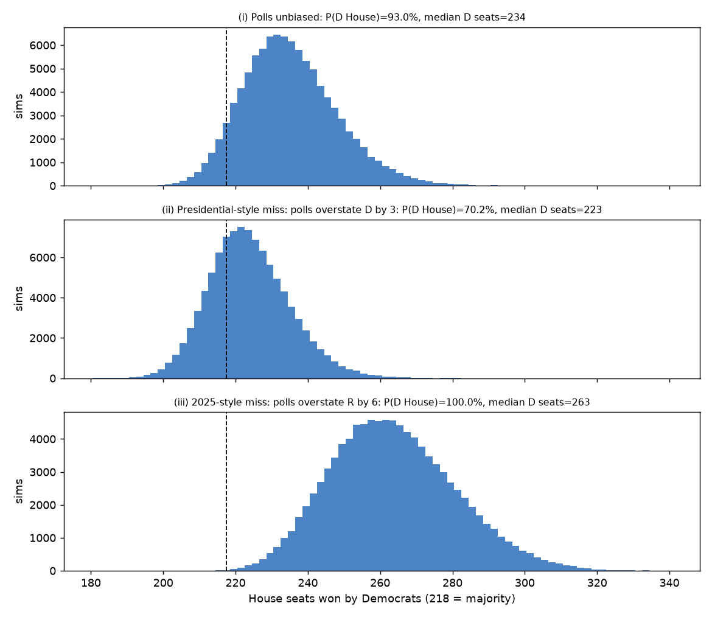
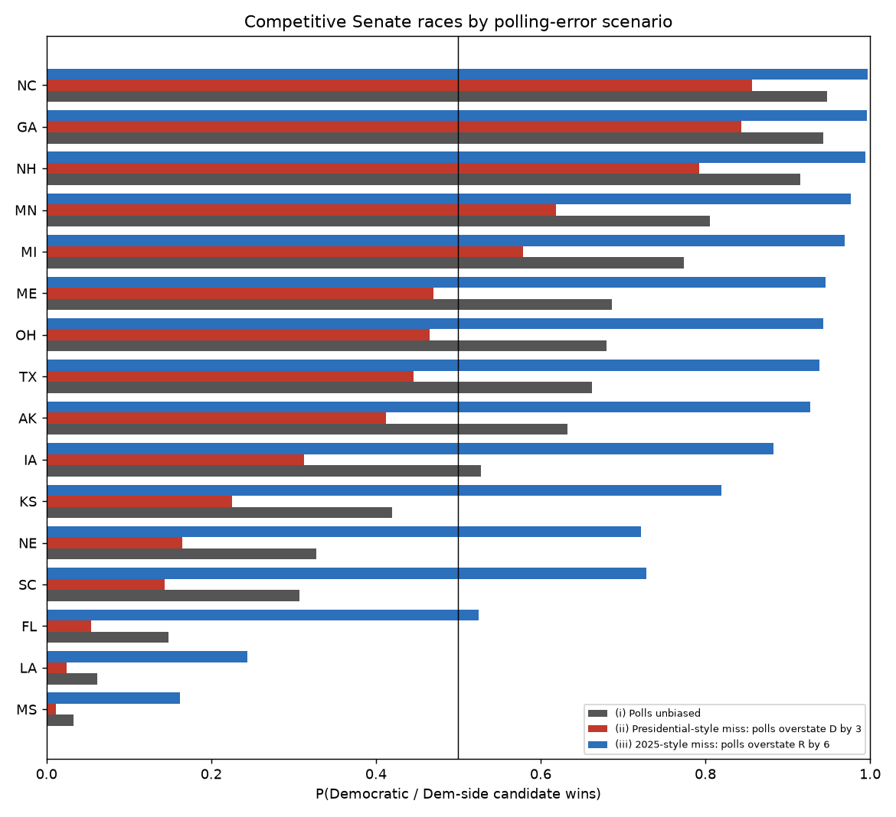

Senate control
51 seats for a D majority; 50-50 goes to R via the VP–Democrats
–Republicans
D + allied I seats (mean)–
80% range–
Tipping-point races:
2026 U.S. Midterms · Snapshot as of October 10, 2026
If the polls are roughly right, Democrats are favored to win both chambers: about a 68% chance of a Senate majority and 93% for the House, riding a generic-ballot lead of D+8.4. Republicans' realistic path to holding both chambers requires the polls to be understating Republicans, as they did in 2016, 2020 and 2024. Even in that scenario Republicans become Senate favorites (about 65%), but Democrats still win the House roughly 70% of the time. If polls instead miss in Democrats' favor, as in the 2025 off-year elections, it becomes a Democratic wave in both chambers.
Polls are never perfect, and their errors tend to point the same way in every race. Each scenario shifts that shared error.
Tipping-point races:
Most frequent tipping-point districts:
| Scenario | P(D Senate) | P(R Senate) | Senate D+I seats | P(D House) | House D seats |
|---|
Seat ranges are the 10th–90th percentile of simulations. Senate D+I counts independents only when they caucus with Democrats in that simulation.
Each bar is the share of 100,000 simulations ending with that many Democratic seats. Top to bottom: polls unbiased, polls overstate Dems by 3, polls overstate Reps by 6.



Probability that the Democrat (or Democratic-aligned independent) wins each race. Click a column header to sort. The column for the scenario selected above is highlighted.
Poll avg / Model margin: Democratic margin in points (D+ / R+). Model margin blends the polling average with fundamentals (partisan lean, generic ballot, incumbency) before polling error is simulated. Tipping %: how often the race delivers the decisive 51st Democratic seat.
Every assumption, source and parameter is documented in METHODOLOGY.md. The full generated report is in REPORT.md, and the raw outputs are summary.json and the per-race CSV.